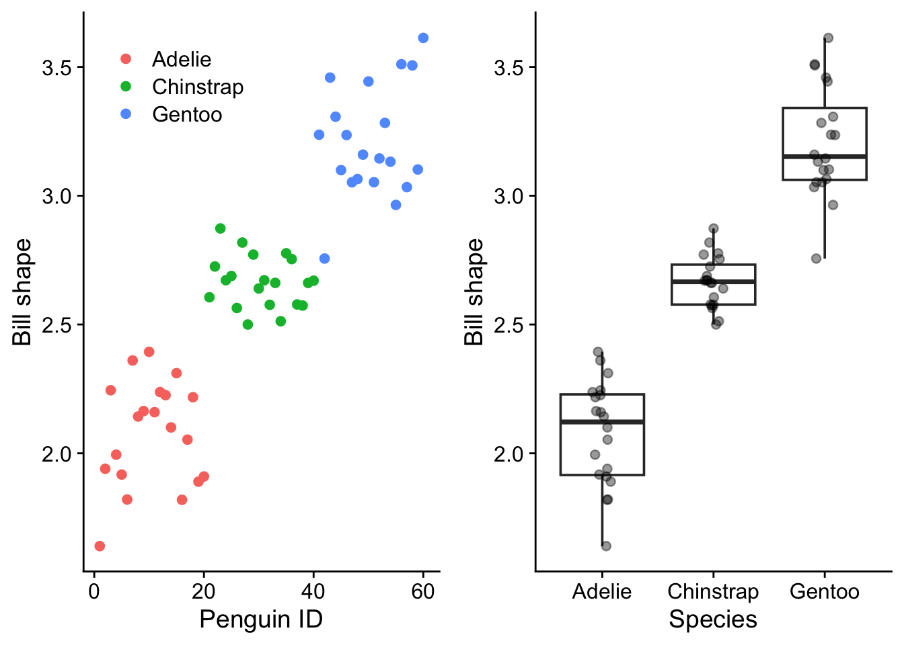
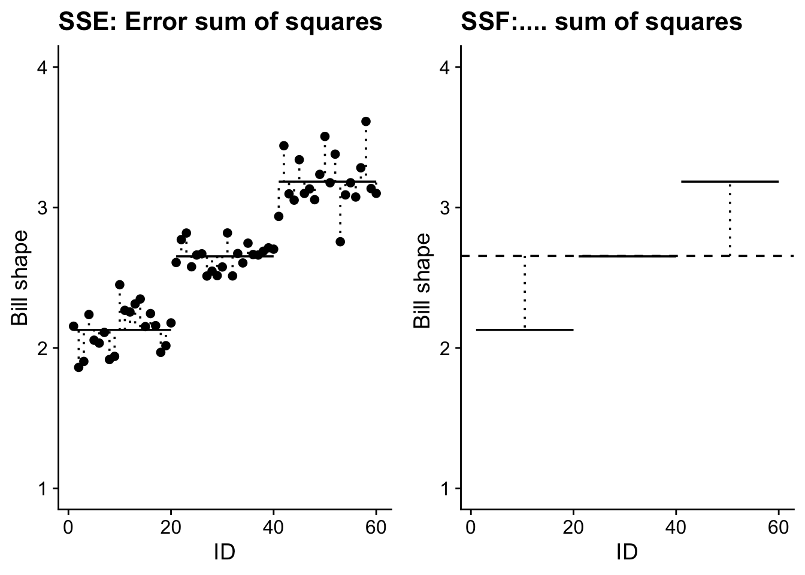
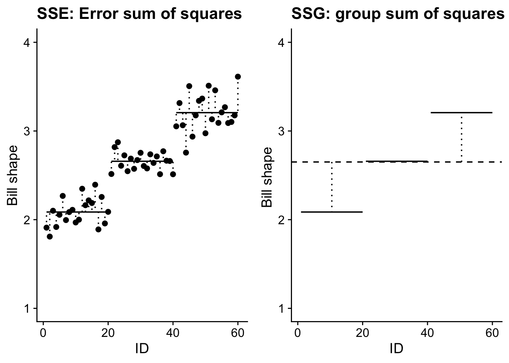

Rows: 344
Columns: 8
$ species <fct> Adelie, Adelie, Adelie, Adelie, Adelie, Adelie, Adel…
$ island <fct> Torgersen, Torgersen, Torgersen, Torgersen, Torgerse…
$ bill_length_mm <dbl> 39.1, 39.5, 40.3, NA, 36.7, 39.3, 38.9, 39.2, 34.1, …
$ bill_depth_mm <dbl> 18.7, 17.4, 18.0, NA, 19.3, 20.6, 17.8, 19.6, 18.1, …
$ flipper_length_mm <int> 181, 186, 195, NA, 193, 190, 181, 195, 193, 190, 186…
$ body_mass_g <int> 3750, 3800, 3250, NA, 3450, 3650, 3625, 4675, 3475, …
$ sex <fct> male, female, female, NA, female, male, female, male…
$ year <int> 2007, 2007, 2007, 2007, 2007, 2007, 2007, 2007, 2007…5 ANOVA explained
5.1 What is ANOVA?
penguins <- penguins_raw |>
drop_na() |>
filter(sex == "male") |>
arrange(species) |>
mutate(bill_shape = bill_length_mm / bill_depth_mm) |>
dplyr::select(species, bill_shape) |>
group_by(species) |>
slice_sample(n = 20) |>
ungroup() |>
mutate(ID=1:60)# penguins |>
# ggplot(aes(x = species, y = bill_shape)) +
# geom_boxplot() +
# labs(x = "Species",
# y = "Bill shape") +
# theme_cowplot()5.1.1 The basic principles of ANOVA
In a simple case we consider the comparison of three means. This is done by the analysis of variance (ANOVA). In this case we will go through an example in detail and work out all the mechanics, but once we have done that and seen how the output is derived from the input we will not need to do it again. We will use R to do the heavy lifting. We will just need to know when it is appropriate to use ANOVA, how to get R to do it and how to interpret the output that R produces.
5.1.2 The Scenario
As our case stud we consider the three species of penguin, Adelie, Chinstrap and Gentoo for which data has been gathered and made available in the palmerpenguins R package. For dozens of indivduals of each species, records have been logged of the species, sex, year, bill length, bill depth, flipper length and body mass. Suppose we are interested in the shape of the bills and so create for each individual a new variable which is the ration of bill length to bill depth. We wish to know if there is evidence from the data of this bill shape differening between the species. In the manner of Darwin’s finches spread across the various Galapagos Islands, this might indicate a different food source for each species and more generally, indicate that each species occupied a different ecological niche from the others.
When we plot the data we see that the species do differ in their bill shapes but that there is also a lot of variation between penguins of the same species.
ggplot(penguins,aes(x=species,y=bill_shape))+
geom_boxplot(alpha = 0.4)+
# geom_violin(alpha = 0.4)+
# geom_point(aes(colour=species))+
geom_jitter(width=0.1, alpha= 0.4) +
# scale_y_continuous(limits=c(0,10))+
labs(x='Species', y='Bill shape')+
theme_cowplot()+
theme(legend.position = "none") -> g1g2<-ggplot(penguins,aes(x=ID,y=bill_shape,colour=species))+
geom_point()+
# scale_y_continuous(limits=c(0,10))+
labs(x='Penguin ID',y='Bill shape', colour = "")+
theme_cowplot() +
theme(legend.position = c(0.58,0.20))grid.arrange(g2,g1,nrow=1)
5.1.3 What does an ANOVA do?
An ANOVA (ANalysis Of VAriance) analysis attempts to determine whether the differences between the effect of the species is significant by investigating the variability in the data. We investigate how the variability between species compares to the variability within species.
5.1.4 Grand Mean
First we calculate the ‘grand mean’, the mean of the bill shapes across all penguins in the data set:
grand_mean=mean(penguins$bill_shape)
grand_mean[1] 2.6548585.1.4.1 Deviations from the grand mean
SST.plot<-g2+geom_hline(yintercept=grand_mean,linetype='dashed')+
geom_segment(aes(x = ID, y = bill_shape, xend = ID, yend = grand_mean),linetype='dotted')
SST.plot
5.1.4.2 Mean value of bill shape for each species
p_means<-penguins |>
group_by(species) |>
summarise(pmean=mean(bill_shape))
penguins <- mutate(penguins,pmeans=c(rep(p_means$pmean[1],20),
rep(p_means$pmean[2],20),
rep(p_means$pmean[3],20)))
p1<-filter(penguins, species=="Adelie")
p2<-filter(penguins, species=="Chinstrap")
p3<-filter(penguins, species=="Gentoo")g3<-ggplot()+
geom_point(data=p1,aes(x=ID,y=bill_shape))+
geom_segment(aes(x=min(p1$ID),y=p1$pmeans[1],xend=max(p1$ID),yend=p1$pmeans[1]))+
geom_segment(aes(x = p1$ID, y = p1$bill_shape, xend = p1$ID, yend = p1$pmeans[1]),linetype='dotted') +
geom_point(data=p2,aes(x=ID,y=bill_shape))+
geom_segment(aes(x=min(p2$ID),y=p2$pmeans[1],xend=max(p2$ID),yend=p2$pmeans[1]))+
geom_segment(aes(x = p2$ID, y = p2$bill_shape, xend = p2$ID, yend = p2$pmeans[1]),linetype='dotted') +
geom_point(data=p3,aes(x=ID,y=bill_shape))+
geom_segment(aes(x=min(p3$ID),y=p3$pmeans[1],xend=max(p3$ID),yend=p3$pmeans[1]))+
geom_segment(aes(x = p3$ID, y = p3$bill_shape, xend = p3$ID, yend = p3$pmeans[1]),linetype='dotted')+
scale_y_continuous(limits=c(1,4))+
labs(x='ID',y='Bill shape',title="SSE: Error sum of squares")+
theme_cowplot()5.1.5 Measures of variability
5.1.5.1 SST - Total sum of squares
SST=sum((penguins$bill_shape-grand_mean)^2)
SST[1] 12.57027SST is the total sum of squares. It is the sum of squares of the deviations of the data around the grand mean. This is a measure of the total variability of the data set.
5.1.5.2 SSE - Error sum of squares
SSE<-penguins |>
group_by(species) |>
mutate(pmean=mean(bill_shape)) |>
mutate(se=(bill_shape-pmean)^2) |>
summarise(sse=sum(se),.groups = 'drop') |>
summarise(SSE=sum(sse),.groups = 'drop') |>
pull(SSE)SSE is the error sum of squares. It is the sum of the squares of the deviations of the data around the three separate species means. This is a measure of the variation between individuals of the same species.
5.1.5.3 SSF - species sum of squares
SSF<-penguins |>
group_by(species) |>
mutate(pmean=mean(bill_shape)) |>
mutate(se=(pmean-grand_mean)^2) |>
summarise(sse=sum(se),.groups = 'drop') |>
summarise(SSF=sum(sse),.groups = 'drop') |>
pull(SSF)SSF is the species sum of squares. This is the sum of the squares of the deviations of the species means from the grand mean. This is a measure of the variation between individuals of different species.
g4<-ggplot()+
geom_hline(yintercept=grand_mean,linetype='dashed')+
geom_segment(aes(x=min(p1$ID),y=p1$pmeans[1],xend=max(p1$ID),yend=p1$pmeans[1]))+
geom_segment(aes(x = mean(p1$ID), y = grand_mean, xend = mean(p1$ID), yend = p1$pmeans[1]),linetype='dotted') +
geom_segment(aes(x=min(p2$ID),y=p2$pmeans[1],xend=max(p2$ID),yend=p2$pmeans[1]))+
geom_segment(aes(x = mean(p2$ID), y = grand_mean, xend = mean(p2$ID), yend = p2$pmeans[1]),linetype='dotted')+
#
geom_segment(aes(x=min(p3$ID),y=p3$pmeans[1],xend=max(p3$ID),yend=p3$pmeans[1]))+
geom_segment(aes(x = mean(p3$ID), y = grand_mean, xend = mean(p3$ID), yend = p3$pmeans[1]),linetype='dotted')+
scale_y_continuous(limits=c(1,4))+
labs(x='ID',y='Bill shape ',title="SSF:.... sum of squares")+
theme_cowplot()grid.arrange(g3,g4,nrow=1)
When the three species means are fitted, there is an obvious reduction in variability around the three means compared to that around the grand mean, but it is not obvious if the species have had an effect on bill_shape.
At what point do we decide if the amount of variation explained by fitting the means is significant? By this, we mean, “When is the variability between the group means greater than we would expect by chance alone?
First, we note that SSF and SSE partition between them the total variability in the data:
5.1.6 SST = SSF + SSE
SST[1] 12.57027SSF[1] 11.13905SSE[1] 1.431218SSF+SSE[1] 12.57027So the total variability has been divided into two components. That due to differences between individuals of different species and that due to differences between individuals of the same species. Variability must be due to one or other of these components. Separating the total SS into its component SS is known as partitioning the sums of squares.
A comparison of SSF and SSE is going to indicate whether fitting the three species means accounts for a significant amount of variability.
However, to make a proper comparison, we really need to compare the variability per degree of freedom ie the variance.
5.1.7 Partitioning the degrees of freedom
Every sum of squares (SS) has been calculated using a number of independent pieces of information. In each, case, we call this number the number of degrees of freedom for the SS.
For SST this number is one less than the number of data points n. This is because when we calculate the deviations of each data point around a grand mean there are only n-1 of them that are independent, since by definition the sum of these deviations is zero, and so when n-1 of them have been calculated, the final one is pre-determined.
Similarly, when we calculate SSF, which measures the deviation of the \(k\) species means from the grand mean, we have \(k\)-1 degrees of freedom, (where in the present example \(k\), the number of species, is equal to three) since the deviations must sum to zero, so when \(k\)-1 of them have been calculated, the last one is pre-determined.
Finally, SSE, which measure deviation around the group means will have n-k degrees of freedom, since the sum of each of the deviations around one of the group means must sum to zero, and so when all but one of them have been calculated, the final one is pre-determined. There are \(k\) group means, so the total degrees of freedom for SSE is n-k.
The degrees of freedom are additive: \[ df(\text{SST}) = df(\text{SSE}) + df(\text{SSF}) \] Check:
\[\begin{align*} df(\text{SST}) &= n-1\\ df(\text{SSE}) &= k-1\\ df(\text{SSF}) &= n-k\\ \therefore df(\text{SSE}) + df(\text{SSF}) &= k-1 + n-k\\ &=n-1\\ &=df(\text{SST}) \end{align*}\]5.1.8 Mean Squares
Now we can calculate the variances which are a measure of the amount of variability per degree of freedom.
In this context, we call them mean squares. To find each one we divided each of the sums of squares (SS) by their corresponding degrees of freedom.
Species Mean Square (FMS) = SSF / k - 1. This is the variation per df between individuals of different species.
Error Mean Square (EMS) = SSE / n - k. This is the variation per df between individuals of the same species.
Total Mean Square (TMS) = SST / n - 1. This is the total variance per df of the dataset.
Unlike the SS, the MS are not additive. That is, FMS + EMS \(\neq\) TMS.
5.1.9 F-ratios
If species did not influence bill shape, we would expect as much variation between the penguins of the same species as between penguins of different species.
We can express this in terms of the mean squares: the mean square for species would be the same as the mean square for error:
\[ \frac{\text{FMS}}{\text{EMS}}=1 \] We call this ratio the F-ratio. It is the end result of ANOVA. F-ratios can never be negative since they are the ratio of two mean square values, both of which must be non-negative, but there is no limit to how large they can be.
Even if the species were identical, the F-ratio is unlikely to be exactly 1 - it could by chance take a whole range of values. The F-distribution represents the range and likelihood of all possible F ratios under the null hypothesis. ie when the species were identical.
The shape of the F distribution depends on the degrees of freedom of FMS and EMS, and we normally specify it by giving the values of each. Below we show F distributions for 2 and 27 degrees of freedom (ie 3 plots, so k = 3, so the degrees of freedom of FMS = k-1 =2, and 10 plants per plot, so n = 3 x 10 =30, and hence the degrees of freedom of EMS = n-k = 30 - 3 = 27), and for 10 and 27 degrees of freedom.
dfs<-c(rep("df = 2, 27",601),rep("df = 10, 27",601))
xs<-rep(seq(0,6,0.01),2)
ys<-c(df(xs[1:601],2,27),df(xs[602:1202],10,27))
fdata<-tibble(x=xs,y=ys,dfs=dfs)
fdata |>
mutate(dfs = fct_relevel(dfs,"df = 2, 27","df = 10, 27")) |>
ggplot(aes(x=xs,y=ys)) +
xlim(0,6) +
ylim(0,1) +
labs(x="F-ratio",
y="Probability density",
caption="The F-distributions for (left) 2 and 27 degrees of freedom and (right) 10 and 27 degrees of freedom") +
geom_line(colour="darkblue") +
facet_wrap(~dfs) +
theme_cowplot()
Note that, whatever the degrees of freedom, F-distributions are examples of so-called probability density functions. The area beneath them between any two values of F-ratio is equal to the probability of getting an F-ratio in that range. Hence the total area under the curves is equal to 1, since the F-ratio must take some value between zero and infinity, and the area under the tail to the right of any given F-ratio is the probability of getting an F-ratio bigger than that value.
Hence, the probability under the null hypothesis of getting an F-ratio as large or larger than the value we actually got is the area to the right of this F-ratio under the appropriate F distribution. We often call this probability the p-value. p for probability. p-values are the the probability of getting data as extreme (same F-ratio,) or more extreme (bigger F-ratio) as the data you got you got if the null hypothesis were true.
If the species were very different, then the FMS would be much greater than the EMS and the F-ratio would be greater than one. However it can be quite large even when there are no differences between the levels (here, Adelie, Chinstrap and Gentoo) of a factor (here, species). So how do we decide when the size of the F-ratio is due to a real difference between the levels rather than to chance?
Our p-value (the probability that the F-ratio would have been as large as it is or larger under the null hypothesis) represents the strength of evidence against the null hypothesis. The smaller it is, the stronger the evidence, and only when it is less than 0.05 do we regard the evidence as strong enough to reject the null. Note though that even if we had inside knowledge that the null hypothesis was in fact true, we would still get an F-ratio that large or larger and thus a p-value less than or equal to 0.05 5% of the time.
Fratio<-function(p,k,st_dev){
n<-p*k # k plots, p replicates per plot
plots<-tibble(plot=c(rep("a",p),rep("b",p),rep("c",p)),response=rnorm(n,mean=0,sd=st_dev))
lm.mod<-lm(response~plot,data=plots)
tidy(anova(lm.mod))$statistic[1]
}